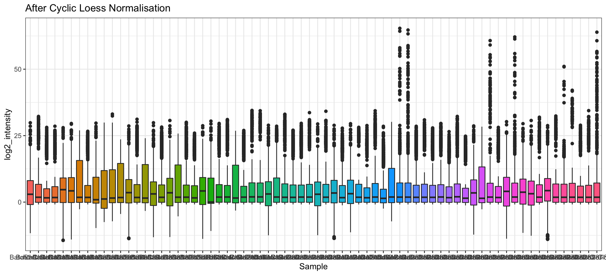

Last updated: 2021-12-06
Checks: 7 0
Knit directory: Tom_Proteomics/
This reproducible R Markdown analysis was created with workflowr (version 1.6.2). The Checks tab describes the reproducibility checks that were applied when the results were created. The Past versions tab lists the development history.
Great! Since the R Markdown file has been committed to the Git repository, you know the exact version of the code that produced these results.
Great job! The global environment was empty. Objects defined in the global environment can affect the analysis in your R Markdown file in unknown ways. For reproduciblity it’s best to always run the code in an empty environment.
The command set.seed(20210429) was run prior to running the code in the R Markdown file. Setting a seed ensures that any results that rely on randomness, e.g. subsampling or permutations, are reproducible.
Great job! Recording the operating system, R version, and package versions is critical for reproducibility.
Nice! There were no cached chunks for this analysis, so you can be confident that you successfully produced the results during this run.
Great job! Using relative paths to the files within your workflowr project makes it easier to run your code on other machines.
Great! You are using Git for version control. Tracking code development and connecting the code version to the results is critical for reproducibility.
The results in this page were generated with repository version 452b6f2. See the Past versions tab to see a history of the changes made to the R Markdown and HTML files.
Note that you need to be careful to ensure that all relevant files for the analysis have been committed to Git prior to generating the results (you can use wflow_publish or wflow_git_commit). workflowr only checks the R Markdown file, but you know if there are other scripts or data files that it depends on. Below is the status of the Git repository when the results were generated:
Ignored files:
Ignored: .Rhistory
Ignored: .Rproj.user/
Untracked files:
Untracked: analysis/preprocessing.Rmd
Untracked: data/27052020-TOTO-All-Clots-Sample-table.xls
Untracked: data/First 70 clots data for SAHMRI.csv
Untracked: data/First 70 clots data for SAHMRI.xlsx
Untracked: data/dge.rds
Untracked: data/modificationSpecificPeptides.txt
Untracked: data/peptides.txt
Untracked: data/proteinGroups.txt
Untracked: output/abundant_protein_heatmap.pdf
Untracked: output/variable_protein_heatmap.pdf
Unstaged changes:
Modified: analysis/_site.yml
Deleted: analysis/about.Rmd
Deleted: analysis/license.Rmd
Note that any generated files, e.g. HTML, png, CSS, etc., are not included in this status report because it is ok for generated content to have uncommitted changes.
These are the previous versions of the repository in which changes were made to the R Markdown (analysis/import.Rmd) and HTML (docs/import.html) files. If you’ve configured a remote Git repository (see ?wflow_git_remote), click on the hyperlinks in the table below to view the files as they were in that past version.
| File | Version | Author | Date | Message |
|---|---|---|---|---|
| Rmd | 452b6f2 | Nhi Hin | 2021-12-06 | wflow_publish(c(“analysis/index.Rmd”, “analysis/import.Rmd”, |
proteinGroups.txt as specified below. The sample metadata table is in two Excel spreadsheets 27052020-TOTO-All-Clots-Sample-table.xls and First 70 clots data for SAHMRI.xlsx (I converted this to a CSV for easier importing with readr). A copy of these files has been stored in the data directory and their paths are specified below.# Protein data location
input <- here("data","proteinGroups.txt")
# Sample data location
samples <- here("data","27052020-TOTO-All-Clots-Sample-table.xls")
samples2 <- here("data", "First 70 clots data for SAHMRI.xlsx")
samples2_csv <- here("data", "First 70 clots data for SAHMRI.csv")# Protein quantification data:
dat <- readr::read_delim(input, delim = "\t", col_names = TRUE)
── Column specification ────────────────────────────────────────────────────────
cols(
.default = col_double(),
`Protein IDs` = col_character(),
`Majority protein IDs` = col_character(),
`Peptide counts (all)` = col_character(),
`Peptide counts (razor+unique)` = col_character(),
`Peptide counts (unique)` = col_character(),
`Fasta headers` = col_character(),
`Sequence lengths` = col_character(),
`Identification type Batch1-Clot-1_Slot1-1_1_1715` = col_character(),
`Identification type Batch1-Clot-10_Slot1-8_1_1721` = col_character(),
`Identification type Batch1-Clot-11_Slot1-9_1_1708` = col_character(),
`Identification type Batch1-Clot-12_Slot1-10_1_1689` = col_character(),
`Identification type Batch1-Clot-16_Slot1-14_1_1694` = col_character(),
`Identification type Batch1-Clot-17_Slot1-15_1_1658` = col_character(),
`Identification type Batch1-Clot-18_Slot1-16_1_1688` = col_character(),
`Identification type Batch1-Clot-23_Slot1-21_1_1729` = col_character(),
`Identification type Batch1-Clot-24_Slot1-22_1_1679` = col_character(),
`Identification type Batch1-Clot-25_Slot1-23_1_1730` = col_character(),
`Identification type Batch1-Clot-26_Slot1-24_1_1686` = col_character(),
`Identification type Batch1-Clot-27_Slot1-25_1_1644` = col_character(),
`Identification type Batch1-Clot-28_Slot1-26_1_1652` = col_character()
# ... with 71 more columns
)
ℹ Use `spec()` for the full column specifications.cleanDat <- dat %>%
tibble::rownames_to_column(var = "ProteinNum") %>%
dplyr::mutate(ProteinNum = gsub("^", "Protein_", ProteinNum)) %>%
dplyr::select(ProteinNum, `Protein IDs`, `Majority protein IDs`, `Peptide counts (all)`, `Number of proteins`, `Peptides`,
`Unique peptides`, `Sequence coverage [%]`, `Unique sequence coverage [%]`, `Mol. weight [kDa]`,
`Sequence length`, `Sequence lengths`, `Q-value`, Score, `Only identified by site`, Reverse,
`Potential contaminant`, id, `Peptide IDs`, `Peptide is razor`, `Mod. peptide IDs`,
`Evidence IDs`, `MS/MS IDs`, `Best MS/MS`, `Deamidation (NQ) site IDs`, `Oxidation (M) site IDs`,
`Deamidation (NQ) site positions`, `Oxidation (M) site positions`, `Taxonomy IDs`, contains("LFQ"))
colnames(cleanDat) <- gsub("^LFQ intensity (Batch[12]-.+)_Slot.+$", "\\1", colnames(cleanDat))
cleanDat# A tibble: 1,314 x 99
ProteinNum `Protein IDs` `Majority protei… `Peptide counts… `Number of prot…
<chr> <chr> <chr> <chr> <dbl>
1 Protein_1 CON__P00761 CON__P00761 2 1
2 Protein_2 CON__P01966 CON__P01966 10 1
3 Protein_3 CON__P02070;s… CON__P02070 7;2 2
4 Protein_4 CON__P02533;s… CON__P02533;sp|P… 16;16;7;6;6;6;5… 40
5 Protein_5 CON__P02538;s… CON__P02538;sp|P… 12;12;11;11;10;… 19
6 Protein_6 CON__P02672 CON__P02672 4 1
7 Protein_7 CON__P02676 CON__P02676 6 1
8 Protein_8 CON__P02768-1… CON__P02768-1;sp… 38;38;5 3
9 Protein_9 sp|P05787|K2C… sp|P05787|K2C8_H… 5;5;3;3;3;3;3;3… 10
10 Protein_10 sp|P08779|K1C… sp|P08779|K1C16_… 14;14;5;5 4
# … with 1,304 more rows, and 94 more variables: Peptides <dbl>,
# Unique peptides <dbl>, Sequence coverage [%] <dbl>,
# Unique sequence coverage [%] <dbl>, Mol. weight [kDa] <dbl>,
# Sequence length <dbl>, Sequence lengths <chr>, Q-value <dbl>, Score <dbl>,
# Only identified by site <chr>, Reverse <chr>, Potential contaminant <chr>,
# id <dbl>, Peptide IDs <chr>, Peptide is razor <chr>,
# Mod. peptide IDs <chr>, Evidence IDs <chr>, MS/MS IDs <chr>,
# Best MS/MS <chr>, Deamidation (NQ) site IDs <chr>,
# Oxidation (M) site IDs <chr>, Deamidation (NQ) site positions <chr>,
# Oxidation (M) site positions <chr>, Taxonomy IDs <chr>,
# Batch1-Clot-1 <dbl>, Batch1-Clot-10 <dbl>, Batch1-Clot-11 <dbl>,
# Batch1-Clot-12 <dbl>, Batch1-Clot-16 <dbl>, Batch1-Clot-17 <dbl>,
# Batch1-Clot-18 <dbl>, Batch1-Clot-23 <dbl>, Batch1-Clot-24 <dbl>,
# Batch1-Clot-25 <dbl>, Batch1-Clot-26 <dbl>, Batch1-Clot-27 <dbl>,
# Batch1-Clot-28 <dbl>, Batch1-Clot-29 <dbl>, Batch1-Clot-3 <dbl>,
# Batch1-Clot-30 <dbl>, Batch1-Clot-31 <dbl>, Batch1-Clot-32 <dbl>,
# Batch1-Clot-33 <dbl>, Batch1-Clot-34 <dbl>, Batch1-Clot-35 <dbl>,
# Batch1-Clot-36 <dbl>, Batch1-Clot-4 <dbl>, Batch1-Clot-6 <dbl>,
# Batch1-Clot-9 <dbl>, Batch2-Clot-13 <dbl>, Batch2-Clot-14 <dbl>,
# Batch2-Clot-15 <dbl>, Batch2-Clot-19 <dbl>, Batch2-Clot-2 <dbl>,
# Batch2-Clot-20 <dbl>, Batch2-Clot-21 <dbl>, Batch2-Clot-22 <dbl>,
# Batch2-Clot-37 <dbl>, Batch2-Clot-38 <dbl>, Batch2-Clot-39 <dbl>,
# Batch2-Clot-40 <dbl>, Batch2-Clot-42 <dbl>, Batch2-Clot-43 <dbl>,
# Batch2-Clot-44 <dbl>, Batch2-Clot-45 <dbl>, Batch2-Clot-46 <dbl>,
# Batch2-Clot-47 <dbl>, Batch2-Clot-48 <dbl>, Batch2-Clot-5 <dbl>,
# Batch2-Clot-51 <dbl>, Batch2-Clot-52 <dbl>, Batch2-Clot-53 <dbl>,
# Batch2-Clot-54 <dbl>, Batch2-Clot-55 <dbl>, Batch2-Clot-56 <dbl>,
# Batch2-Clot-58 <dbl>, Batch2-Clot-59 <dbl>, Batch2-Clot-60 <dbl>,
# Batch2-Clot-61 <dbl>, Batch2-Clot-62 <dbl>, Batch2-Clot-63 <dbl>,
# Batch2-Clot-64 <dbl>, Batch2-Clot-65 <dbl>, Batch2-Clot-66 <dbl>,
# Batch2-Clot-68 <dbl>, Batch2-Clot-69 <dbl>, Batch2-Clot-70 <dbl>,
# Batch2-Clot-72 <dbl>, Batch2-Clot-74 <dbl>, Batch2-Clot-78 <dbl>,
# Batch2-Clot-83 <dbl>, Batch2-Clot-87 <dbl>, Batch2-Clot-88 <dbl>,
# Batch2-Clot-93 <dbl>cleanDat contains both protein annotation info and protein quantification, we will split these into two separate data.frames so that the data processing is more straightforward later on.# Get protein quantification into an intensity matrix:
mat <- cleanDat %>%
dplyr::select(starts_with("Batch")) %>%
as.data.frame()
rownames(mat) <- gsub("^", "Protein_", rownames(mat))
dim(mat)[1] 1314 70cleanDat as follows:proteins <- cleanDat %>%
as.data.frame %>%
set_rownames(.$ProteinNum) %>%
dplyr::select(-starts_with("Batch")) %>%
set_colnames(gsub(x = colnames(.), pattern = " ", replacement = "_")) %>%
tidyr::separate_rows(Majority_protein_IDs, sep = ";")
head(proteins$Majority_protein_IDs, 20) [1] "CON__P00761" "CON__P01966" "CON__P02070"
[4] "CON__P02533" "sp|P02533|K1C14_HUMAN" "CON__P02538"
[7] "sp|P02538|K2C6A_HUMAN" "CON__P48668" "sp|P48668|K2C6C_HUMAN"
[10] "CON__P04259" "CON__P02672" "CON__P02676"
[13] "CON__P02768-1" "sp|P02768|ALBU_HUMAN" "sp|P05787|K2C8_HUMAN"
[16] "CON__P05787" "CON__Q9DCV7" "sp|P08729|K2C7_HUMAN"
[19] "CON__Q3KNV1" "CON__P08729" This gives 1513 proteins which have been quantified.
However, the IDs of the proteins is not in an ideal format. There are proteins with human UniProt identifiers (e.g. P02768 corresponding to the ALBU gene). Despite this, a number of other UniProt identifiers appear to be from other species including Sus scrofa and Bos taurus. I am not sure about the reasons for this, although it could be related to the homology mapping used in the initial pre-processing of the data (which I do not have any info about currently).
Because of this, I am going to try to extract out all proteins that have clearly identifiable human UniProt IDs first. These appear to be defined in the dataset as proteins which end with HUMAN in the Majority_protein_IDs column. Then we will decide what to do with the other ones.
# Retrieve list of human Uniprot identifiers
entrez2Uniprot <- org.Hs.egUNIPROT %>%
as.data.frame
human_proteins <- proteins %>%
dplyr::filter(grepl("HUMAN",Majority_protein_IDs))
nrow(human_proteins)[1] 1470other_proteins <- proteins %>%
dplyr::filter(!grepl("HUMAN",Majority_protein_IDs))
nrow(other_proteins)[1] 43proteins %<>%
dplyr::filter(grepl("HUMAN",Majority_protein_IDs)) %>%
tidyr::separate(col = Majority_protein_IDs, into = c("sp", "UniProt_ID", "Gene"), sep = "\\|") %>%
dplyr::mutate(Gene = gsub(x = Gene, pattern = "_HUMAN", replacement = "")) %>%
as.data.frame %>%
dplyr::distinct(UniProt_ID, .keep_all = TRUE) %>%
set_rownames(.$UniProt_ID)
#tidyr::separate_rows(Protein_IDs, sep = ";") %>% View
# proteins %<>%
# dplyr::filter(grepl("HUMAN",Majority_protein_IDs)) %>%
# tidyr::separate_rows(Majority_protein_IDs, sep = "\\|") %>%
# dplyr::filter(!grepl("HUMAN",Majority_protein_IDs),
# !grepl("sp", Majority_protein_IDs)) %>%
# dplyr::distinct(Majority_protein_IDs,.keep_all=TRUE) %>%
# as.data.frame %>%
# set_rownames(.$Majority_protein_IDs)
nrow(proteins)[1] 1466mat %<>% as.data.frame %>%
rownames_to_column("ProteinNum") %>%
left_join(proteins[, c("ProteinNum", "UniProt_ID")]) %>%
dplyr::filter(!is.na(UniProt_ID)) %>%
dplyr::select(-ProteinNum) %>%
column_to_rownames("UniProt_ID") Joining, by = "ProteinNum"# Quick sanity check: OK.
table(rownames(mat) == rownames(proteins))
TRUE
1466 # Sample metadata import
sampleInfo <- readxl::read_xls(samples) %>%
as.data.frame() %>%
tibble::rownames_to_column(var = "order") %>%
dplyr::select(order, Vial, `Sample ID`) %>%
dplyr::mutate(`Sample ID` = gsub("^TOTO-", "", `Sample ID`)) %>%
dplyr::mutate(Sample = gsub(x = `Sample ID`, pattern = "^Batch[[:digit:]]-Clot-([[:digit:]]{1,2})", replacement = "\\1")) %>%
dplyr::mutate(Sample = case_when(!Sample %in% 1:100 ~ "remove",
TRUE ~ Sample)) %>%
dplyr::filter(!Sample == "remove")
# Consolidate sample metadata into 1 data.frame
sampleMetadata <- readr::read_csv(samples2_csv) %>%
as.data.frame %>%
set_colnames(gsub(x = colnames(.), pattern = " ", replacement = "_")) %>%
set_colnames(gsub(x = colnames(.), pattern = "-|/|\\?", replacement = "")) %>%
dplyr::rename(Sample = Clot_No) %>%
dplyr::mutate(Sample = as.character(Sample)) %>%
left_join(sampleInfo, by = "Sample")
── Column specification ────────────────────────────────────────────────────────
cols(
.default = col_double(),
Notes = col_character(),
DOB = col_character(),
Sex = col_character(),
`Onset Date` = col_character(),
`Onset Time` = col_time(format = ""),
`Time Last Seen Well` = col_time(format = ""),
`Arrival Date` = col_character(),
`Arrival Time` = col_time(format = ""),
Mechanism = col_character(),
`Occlusion sites` = col_character(),
ECG = col_character(),
`Lysis Type` = col_character(),
`Thrombolytic Dose or reason not thrombolysed` = col_character(),
`Lysis Time` = col_character(),
`First Run` = col_time(format = ""),
Anaesthetic = col_character(),
`Recanalisation Time` = col_character(),
`IA device and number of passes` = col_character(),
`IA secondary device and no of passes` = col_character(),
Complications = col_character()
# ... with 2 more columns
)
ℹ Use `spec()` for the full column specifications.# few extra modifications to the metadata
sampleMetadata %<>%
dplyr::mutate(Onset_Year = gsub(x = as.character(Onset_Date),
pattern = "^(.*)\\/(18|19)$",
replacement = "\\2")) %>%
dplyr::mutate(Sex = as.factor(Sex),
Mechanism_Code = as.factor(Mechanism_Code),
LAA = as.factor(LAA),
CAembolism = as.factor(CAembolism),
SV_occlusion = as.factor(SV_occlusion),
Other_Uncommon = as.factor(Other_Uncommon),
Unknown_Incomplete = as.factor(Unknown_Incomplete),
Athero = as.factor(Athero),
Smoking = as.factor(Smoking),
HTN = as.factor(HTN),
AF = as.factor(AF),
Hyperlipidaemia = as.factor(Hyperlipidaemia),
Diabetes = as.factor(Diabetes),
Prev_dx_of_stroke = as.factor(Prev_dx_of_stroke),
Prev_dx_of_TIA = as.factor(Prev_dx_of_TIA),
CHF = as.factor(CHF),
IHD = as.factor(IHD),
Aspirin = as.factor(Aspirin),
Clopidogrel = as.factor(Clopidogrel),
Dipyridamole = as.factor(Dipyridamole),
Warfarin = as.factor(Warfarin),
Other_antithrombotic = as.factor(Other_antithrombotic),
Statin = as.factor(Statin),
Suspended_Anticoagulant = as.factor(Suspended_Anticoagulant),
mRS = as.factor(mRS),
Thrombolysis = as.factor(Thrombolysis),
Haemorrhage = as.factor(Haemorrhage),
Type_of_Haemorrhage = as.factor(Type_of_Haemorrhage)
)sampleMetadata %>%
ggplot(aes(x = Sex, fill = Mechanism_Code)) +
geom_bar() +
labs(y = "Count") +
ggtitle("Types of blood clots by sex")sampleMetadata %>%
ggplot(aes(x = Age, fill = Mechanism_Code)) +
geom_histogram(bins = 20, alpha=0.6) +
facet_wrap(~Mechanism_Code) +
ggtitle("Age distributions of different types of blood clots")sampleMetadata %>%
ggplot(aes(y = Age, x=Sex, fill = Sex)) +
geom_boxplot() +
#geom_histogram(bins = 25, alpha=0.6) +
ggtitle("Age distributions of male and female patients")To simplify working with the data, including normalisation, filtering, etc we will store all the data in a DGEList (digital gene expression) object. This object is designed for gene expression data originally, but it works well for proteomics datasets as well and provides helpful functions for normalisation, filtering, etc.
In previous work, I have found the Cyclic Loess method to work well for normalising proteomics data. The method also performed well in a recent comparison of normalisation methods for both TMT and label-free proteomics (Graw et al. 2020).
Cyclic Loess is implemented in limma, so we can perform the normalisation as follows. Prior to normalisation, I also removed all proteins that had zero abundance across all samples, corresponding to 89 proteins removed.
dge <- DGEList(counts = mat,
genes = proteins,
samples = sampleMetadata,
remove.zeros = TRUE) %>%
calcNormFactors() #Calculate "library size" or total protein abundance for each sampleRemoving 89 rows with all zero counts# Normalise data and store this in the $norm slot of the DGEList
dge$norm <- dge$counts %>%
add(0.25) %>% # Offset to prevent Inf from showing up when we apply log2
log2 %>%
limma::normalizeBetweenArrays(method = "cyclicloess",
cyclic.method = "fast") dge$counts %>%
add(0.25) %>%
log2 %>%
melt() %>%
set_colnames(c("uniProtID", "Sample", "log2_intensity")) %>%
ggplot(aes(x = Sample, y = log2_intensity, fill = Sample)) +
geom_boxplot(show.legend = FALSE) +
ggtitle("Raw log2 intensities")dge$norm %>%
melt() %>%
set_colnames(c("uniProtID", "Sample", "log2_intensity")) %>%
ggplot(aes(x = Sample, y = log2_intensity, fill = Sample)) +
geom_boxplot(show.legend = FALSE) +
ggtitle("After Cyclic Loess Normalisation")
# Arbitrary cutoff to remove low abundance proteins
keepTheseProteins <- (rowSums((dge$counts) > 0.5) >= 3)
A <- dge$counts %>%
add(0.25) %>%
log2 %>%
melt %>%
dplyr::filter(is.finite(value)) %>%
ggplot(aes(x = value, colour = Var2)) +
geom_density() +
guides(colour = FALSE) +
ggtitle("A. Before filtering") +
labs(x = "logCPM", y = "Density")
B <- dge$norm %>%
magrittr::extract(keepTheseProteins,) %>%
melt %>%
dplyr::filter(is.finite(value)) %>%
ggplot(aes(x = value, colour = Var2)) +
geom_density() +
guides(colour = FALSE) +
ggtitle("B. After filtering")+
labs(x = "logCPM", y = "Density")
grid.newpage()
vp1 <- viewport(x = 0, y = 0, width = 0.5, height = 1, just = c(0, 0))
vp2 <- viewport(x = 0.5, y = 0, width = 0.5, height = 1, just = c(0,0))
print(A, vp = vp1)
print(B, vp = vp2)dge <- dge[keepTheseProteins,,keep.lib.sizes = FALSE] dge %>% saveRDS(here("data", "dge.rds"))
sessionInfo()R version 4.0.3 (2020-10-10)
Platform: x86_64-apple-darwin17.0 (64-bit)
Running under: macOS Mojave 10.14.6
Matrix products: default
BLAS: /Library/Frameworks/R.framework/Versions/4.0/Resources/lib/libRblas.dylib
LAPACK: /Library/Frameworks/R.framework/Versions/4.0/Resources/lib/libRlapack.dylib
locale:
[1] en_AU.UTF-8/en_AU.UTF-8/en_AU.UTF-8/C/en_AU.UTF-8/en_AU.UTF-8
attached base packages:
[1] grid parallel stats4 stats graphics grDevices utils
[8] datasets methods base
other attached packages:
[1] umap_0.2.7.0 pheatmap_1.0.12 cowplot_1.1.0
[4] mlbench_2.1-3 caret_6.0-86 lattice_0.20-41
[7] org.Hs.eg.db_3.12.0 AnnotationDbi_1.52.0 IRanges_2.24.0
[10] S4Vectors_0.28.0 Biobase_2.50.0 BiocGenerics_0.36.0
[13] edgeR_3.32.0 limma_3.46.0 readr_1.4.0
[16] tidyr_1.1.3 tibble_3.1.1 reshape2_1.4.4
[19] ggplot2_3.3.3 dplyr_1.0.5 magrittr_2.0.1
[22] here_1.0.0 workflowr_1.6.2
loaded via a namespace (and not attached):
[1] nlme_3.1-149 fs_1.5.0 lubridate_1.7.10
[4] bit64_4.0.5 RColorBrewer_1.1-2 rprojroot_2.0.2
[7] tools_4.0.3 bslib_0.2.4 utf8_1.1.4
[10] R6_2.5.0 rpart_4.1-15 DBI_1.1.0
[13] colorspace_2.0-0 nnet_7.3-14 withr_2.3.0
[16] tidyselect_1.1.0 bit_4.0.4 compiler_4.0.3
[19] git2r_0.27.1 cli_3.0.1 labeling_0.4.2
[22] sass_0.3.1 scales_1.1.1 askpass_1.1
[25] stringr_1.4.0 digest_0.6.27 rmarkdown_2.8
[28] pkgconfig_2.0.3 htmltools_0.5.1.1 readxl_1.3.1
[31] rlang_0.4.10 rstudioapi_0.13 RSQLite_2.2.1
[34] farver_2.0.3 jquerylib_0.1.3 generics_0.1.0
[37] jsonlite_1.7.2 ModelMetrics_1.2.2.2 Matrix_1.2-18
[40] Rcpp_1.0.5 munsell_0.5.0 fansi_0.4.1
[43] reticulate_1.18 lifecycle_1.0.0 stringi_1.5.3
[46] whisker_0.4 pROC_1.16.2 yaml_2.2.1
[49] MASS_7.3-53 plyr_1.8.6 recipes_0.1.15
[52] blob_1.2.1 promises_1.1.1 crayon_1.4.1
[55] splines_4.0.3 hms_1.0.0 locfit_1.5-9.4
[58] knitr_1.30 pillar_1.6.0 codetools_0.2-16
[61] glue_1.4.2 evaluate_0.14 data.table_1.13.2
[64] vctrs_0.3.7 httpuv_1.5.4 foreach_1.5.1
[67] cellranger_1.1.0 openssl_1.4.3 gtable_0.3.0
[70] purrr_0.3.4 assertthat_0.2.1 xfun_0.23
[73] gower_0.2.2 prodlim_2019.11.13 RSpectra_0.16-0
[76] later_1.1.0.1 class_7.3-17 survival_3.2-7
[79] timeDate_3043.102 iterators_1.0.13 memoise_1.1.0
[82] lava_1.6.8.1 ellipsis_0.3.1 ipred_0.9-9